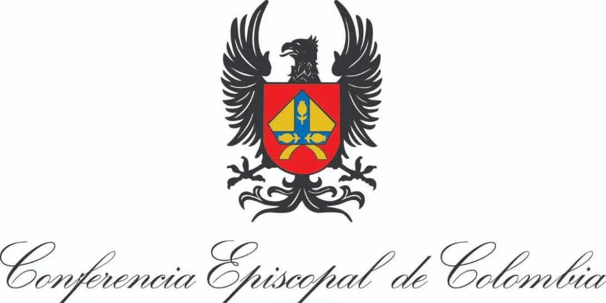

|
 CERTIFICA QUE Ana Maria Valencia Identificado(a) con Cédula de ciudadanía 38.234.581 Participó en: texto de prueba texto de prueba texto de prueba de texto de prueba de texto de prueba, con una duración de 10 horas texto de prueba, texto de prueba Padre Jorge Enrique Bustamante Secretario General Conferencia Episcopal de Colombia |